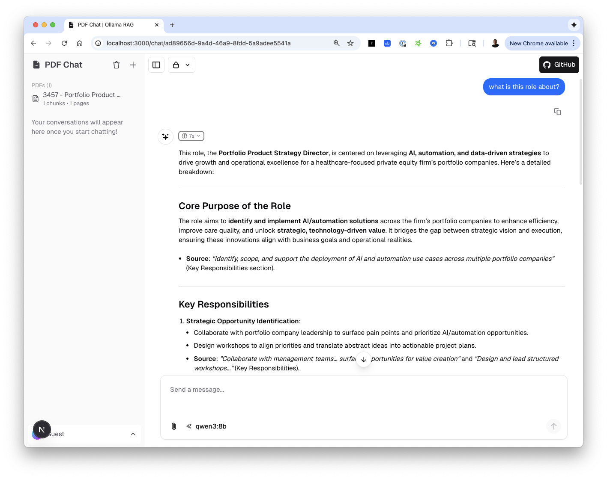

Quick Start Guide¶
Get up and running with Ollama PDF RAG in 5 minutes.
Prerequisites¶
- Completed the installation
- Ollama running with models pulled
- Virtual environment activated
Option 1: Next.js UI (Recommended)¶
The Next.js interface is the modern, feature-rich option.
Start Both Services¶
# Easy way - uses the start script
./start_all.sh
# Or manually in two terminals:
# Terminal 1 - Backend
python run_api.py
# Terminal 2 - Frontend
cd web-ui && pnpm dev
Open the App¶
Navigate to http://localhost:3000

Workflow¶
1. Upload PDF → Click 📎 button, select PDF
2. Select PDF → Check ☑️ the PDF in sidebar
3. Ask Question → Type in chat box, press Enter
4. Get Answer → Response with source citations
Option 2: Streamlit UI (Classic)¶
The Streamlit interface is simpler and good for quick testing.
Start the App¶
Open the App¶
Navigate to http://localhost:8501

Basic Usage¶
1. Upload a PDF¶
Next.js: - Click the 📎 (paperclip) button in the chat input - Select your PDF file - Wait for processing (shown in toast notification)
Streamlit: - Use the file uploader in the sidebar - Or click "Load Sample PDF"
2. Select PDFs for Context¶
Next.js:
- Check the boxes next to PDFs you want to search
- Use "All" or "None" buttons for quick selection
- Selection persists across page refreshes
Important
If you don't select any PDFs and ask a document question, you'll see a warning prompting you to select documents.
3. Choose a Model¶
Click the model selector in the chat input:
| Model | Best For |
|---|---|
llama3.2 |
Fast, general purpose |
qwen3:8b |
Detailed reasoning, thinking mode |
mistral |
Balanced performance |
4. Ask Questions¶
Good questions:
✅ "What are the main security recommendations?"
✅ "Summarize section 3 of the document"
✅ "What does the warranty cover?"
✅ "Compare the approaches mentioned in pages 5-7"
The system handles:
📄 Document questions → Uses RAG with selected PDFs
💬 General questions → Direct chat (no RAG needed)
⚠️ Doc questions without PDFs → Shows warning
5. Understanding Responses¶
Responses include:
- Answer: The main response
- Sources: Which PDF chunks were used
- Reasoning (qwen3/deepseek): Chain-of-thought process
Example response:
The document covers three main security aspects:
1. **Authentication** - Multi-factor authentication is required...
2. **Authorization** - Role-based access control using...
3. **Encryption** - All data at rest uses AES-256...
**Sources:**
- Security_Guide.pdf (chunk 3)
- Security_Guide.pdf (chunk 7)
- Security_Guide.pdf (chunk 12)
Service URLs¶
| Service | URL | Purpose |
|---|---|---|
| Next.js UI | http://localhost:3000 | Modern chat interface |
| Streamlit UI | http://localhost:8501 | Classic interface |
| FastAPI Backend | http://localhost:8001 | REST API |
| API Docs | http://localhost:8001/docs | Swagger UI |
| Health Check | http://localhost:8001/health | Status endpoint |
Example Session¶
Here's a complete example workflow:
# 1. Start services
./start_all.sh
# 2. Open browser to http://localhost:3000
# 3. Upload a PDF (click 📎)
# → Select "company_policy.pdf"
# → Wait for "uploaded successfully!" toast
# 4. Select the PDF (check ☑️ in sidebar)
# → Shows: "Documents (1/1)"
# 5. Ask a question
# → "What is the vacation policy?"
# 6. Get answer with sources
# → "According to the document, employees receive..."
# → Sources: company_policy.pdf (chunk 5, 8)
# 7. Follow up
# → "What about sick leave?"
# → Uses same document context
Tips for Best Results¶
Document Preparation¶
- Use text-based PDFs (not scanned images)
- Smaller PDFs process faster
- Split very large PDFs into sections
Asking Questions¶
- Be specific: "What is X?" vs "Tell me about X"
- Reference sections: "In the introduction..."
- Ask follow-ups: "Can you explain more about...?"
Performance¶
- Select only needed PDFs (fewer = faster)
- Use
llama3.2for speed,qwen3:8bfor detail - Clear chat history periodically
Troubleshooting¶
"No PDFs uploaded yet"¶
→ Click 📎 and upload a PDF first
"No documents selected"¶
→ Check the ☑️ boxes next to PDFs in sidebar
Response is slow¶
→ Try a smaller model or select fewer PDFs
"Model not found"¶
→ Run ollama pull <model-name>
Next Steps¶
- PDF Processing - How documents are chunked
- RAG Pipeline - How retrieval works
- API Reference - Use the REST API
- Contributing - Help improve the project